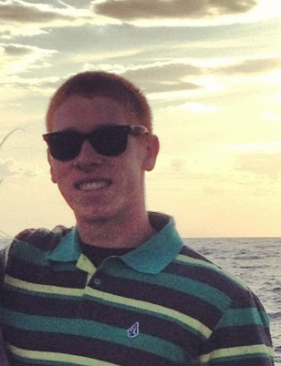

Joshua Foley is a senior at Michigan State University, studying Media & Information. He is interested in IT and web developement and loves learning about the endless possibilities in these fields. During his four years at MSU, Josh has been a part of the Army Reserve Officer Training Corps (ROTC). After graduation, he will become an officer in the Signal Corps, which is responsible for the communication and technological aspects of the Army. After his service obligation in the Army, Josh would like to use his experiences to pursue a career in a similar occupation or possibly return to school for a master's degree. In his spare time, you'll often find Josh at the gym or playing IM sports on campus. Josh lives by the motto "You miss 100% of the shots you don't take" because it reminds him that you have to be motivated and ambitious to pursue goals in your life. You can find Josh on twitter at @joshualfoley.